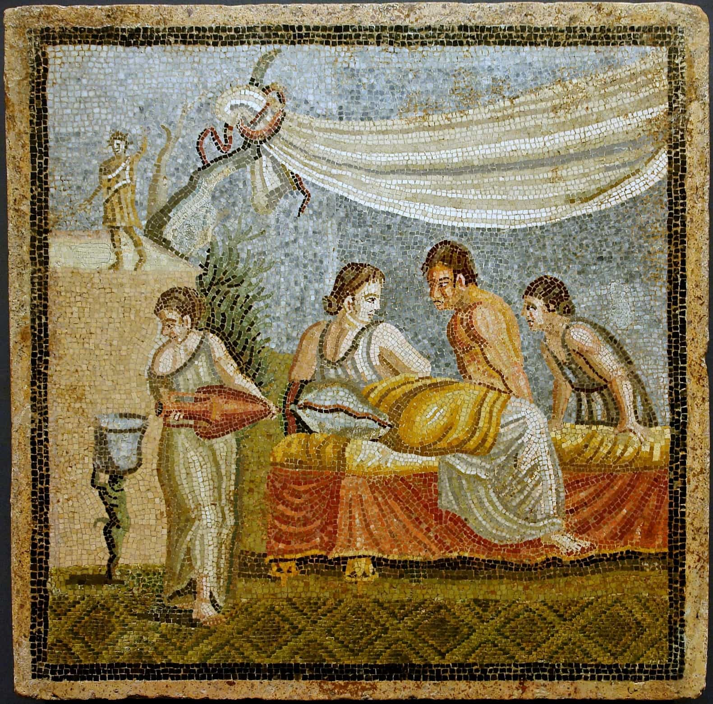

Quintus can be found at qcurtius.com. He is the author of the books On Duties, Thirty Seven, Sallust: The Conspiracy Of Catiline And The War Of Jugurtha, and other books. His work has been reviewed at Taki's Magazine. He can be followed on Twitter


It goes without saying that you should know at least one modern foreign language. It adds depth to your soul, increases your travel options, and opens up new universes. Two modern languages would be better still, if you can manage it. But in addition to this, I would like to make the argument (or the exhortation) that you should at some point learn a classical language like Latin. Now, before you roll your eyes and dismiss the suggestion out of hand, consider the following arguments:
Eighty percent of Western civilization, I have read, comes directly from the Latin language. From roughly 100 B.C. to, say, A.D. 1750, it was the exclusive lingua franca in Europe for literature, science, philosophy, government, politics, and education. That is a long, long time. For example, as late as the 1700s, Isaac Newton’s main opus, the “Principia”, was written not in English, but Latin, so that he could reach an international audience. So, by knowing Latin, you get instant access to the world’s most influential civilization, spanning the entire classical period, the Middle Ages, the Renaissance, and the early modern period. All of the West’s preeminent works were written during this period.
All of the Romance languages (Spanish, Portuguese, French, Italian, Romanian, etc) are in essence corrupted or simplified versions of Latin. Latin is the key that opens all these doors as well. Taking this into account, Latin has had far more influence than English in history, over a much wider period of time.
It shows you what Western society used to be like in previous eras. For a modern American, it will be an eye-opening journey, I can promise you. I have suspected for a long time that the political correctness crowd, and the feminist crowd, do not want you to know what society was like in the past. They want to eradicate this knowledge, and promote the idea that we are now living in the best period of human history. This is false, of course.
Knowing Latin will enable you to have the keys to the forbidden kingdom. Latin, by opening up the world of the West’s past, will fortify you against—and insulate you from—the depredations of feminist claptrap. You will know that the West was once built on healthy, biologically sound principles of relations between the sexes. You will begin to see our modern feminized culture as the negative historical aberration that it really is.

As Will Durant once said, one cannot really claim to be a man of letters unless he knows a classical language. Regardless of what your intellectual goals are, there are strong arguments for working Latin into your educational development. You will know you are on the right path when people think you’re “impractical” for trying to do it. Far from being a “dead” language, Latin is all around us. There are, for example internet radio broadcasts in Finland and Germany where you can hear news roundups in Latin, and there are email listservs where scholars communicate only in Latin.
Learning Latin will add to your “intellectual game” in ways that you could not imagine. For those interested, here are my own practical suggestions about how to go about learning Latin efficiently and enjoyably:
1. Use Hans Orberg’s “natural languge” method texts, recordings, and workbooks, “Familia Romana” and “Roma Aeterna”. This is Latin taught the European way. These materials can be bought from the website for Focus Publishing , the US distributor. Work your way through these books, together with the supplementary readers. You will need to make this a daily exercise, for at least 30 minutes per day. Suck it up. Any language is a jealous mistress, and will involve a lifelong relationship.
2. Work your way through John Traupman’s “Conversational Latin for Oral Proficiency” with recordings. Remember Latin is a language like any other, not a museum relic. Treating it as if it were still a spoken language does wonders for your learning curve. You can also get on a Latin listserv, where the members write only in Latin. You really feel like a Renaissance scholar.
3. Listen weekly to Radio Finland’s Latin language news roundup. It can be found here. Or, if you prefer hearing Latin with a German accent, check out Radio Bremen in Latin.
Valete!
Read More: How To Quickly Learn The Basics Of Polish